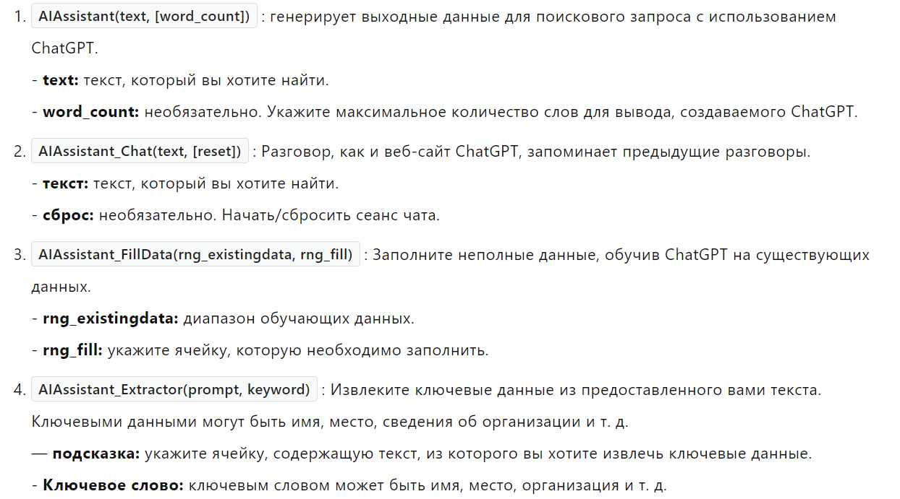
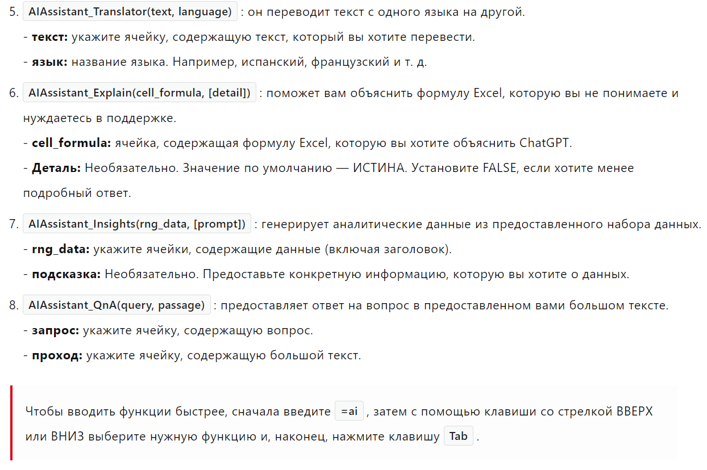

Раз вы читаете эту часть, то уже без проблем выполняете все базовые задачи, создавая таблицы, и уверены, что сможете разобраться в чем-то нестандартом, требующем немного времени на установку и настройку. Вы можете упростить свою работу с помощью искусственного интелекта, анализируя данные, генерируя формулы, задавая вопросы и получая ответы от ChatGPT. Наверняка вы знаете, что сейчас использование ИИ - это очень распространенная практика, и даже существуеn возможность добавить своего собственного виртуального помощника прямо в Excel. В этой статье рассказывается как установить данный ИИ и небольшая подборка советов как им пользоваться.
Примечание: Данный пункт требует установки дополнительных файлов, ссылку на их скачивание можно найти в тексте статьи, или вы можете найти ее в меню сверху сайта. Также данная часть делится на 2 части.
1) Вы можете скачать данное расширение из оффициального магазина Microsoft и пользоваться ИИ бесплатно, но с немного ограниченным функционалом.
2) Для этого вам потребуется иметь зарегистрированный аккаунт на сайте OpenAI, ограничения по функционалу не будет, но этот способ сложнее предыдущего.
Первая часть:
Нужно перейти по этой ссылке и скачать расширение.
На самом деле это все, такой способ не требует дополнительных действий, ограничен по функционалу, но является бесплатным.
Часть Вторая:
Как установить расширение вручную:
Примечание: Когда вы загружаете файл расширения или макроса из Интернета, Microsoft блокирует их запуск и показывает, что источник этого файла не является надежным. Вам необходимо выполнить следующие шаги, чтобы все заработало:
1) Перейдите в папку, где находится скачанный файл.
2) Щелкните файл правой кнопкой мыши и выберите «Свойства» в меню.
3) В нижней части вкладки «Общие» установите флажок «Разблокировать» в разделе «Безопасность» и нажмите «ОК».
Выполните следующие действия, чтобы установить ChatGPT в Excel:
1) Переходите по этой ссылке и скачиваете расширение
2) Откройте Excel и щелкните вкладку «Файл» на ленте.
3) Нажмите «Параметры», а затем выберите «Расширения» или «Надстройки» в меню слева.
4) В раскрывающемся меню «Управление» в нижней части экрана выберите «Надстройки Excel» и нажмите кнопку «Перейти».
5) Нажмите кнопку «Обзор» и найдите загруженный вами файл. Выберите файл и нажмите кнопку «ОК».
6) Вы должны увидеть имя файла в диалоговом окне «Надстройки». Установите флажок рядом с названием файла, чтобы активировать ее.
После того, как вы выполните вышеуказанные шаги, в вашей книге Excel должна появиться новая вкладка под названием ChatGPT.
Далее вам потребуется аккаунт на сайте OpenAI, а также выполнить еще несколько дейсвий.
Примечание: этот сайт зарубежный и советую посмотреть в интернете как на нем зарегистрироваться. Также важно изучить инструкцию получения API ключа. Ссылки на данные инструкции будут ниже:
Выполните следующие действия, чтобы использовать надстройку ChatGPT для MS Excel:
1) Откройте новую или существующую книгу MS Excel.
2)Введите текст, который хотите задать ChatGPT, в любую ячейку.
3) Нажмите вкладку ChatGPT > AI Assistant.
4) Введите свой ключ API и выберите тип модели.
5) Выберите ячейку, в которую вы ввели текст на шаге 2. Вывод будет сгенерирован и появится в течение нескольких секунд.
Если вы хотите, чтобы ChatGPT запускался в нескольких ячейках, вы можете использовать функцию AIAssistant. Подробности смотрите в следующем разделе.
Теперь, как пользоваться ИИ. Вам потребуется знать несколько комманд на английском языке, чтобы реализовывать свои цели. Они будут представленны ниже. Примечание: у обоих версий расширений комманды немного различаются, но имеют схожие слова в своем составе и такой же схожий функционал.

